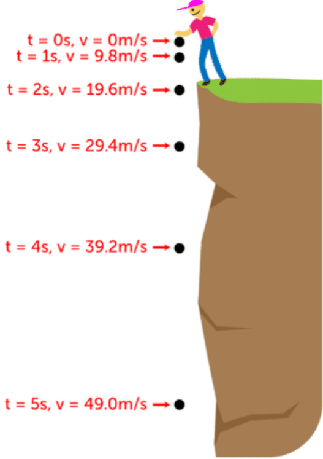

Bias-Variance Tradeoff üéØ
MSSC 6250 Statistical Machine Learning
Supervised Learning
Supervised learning investigates and models the relationships between responses and inputs.

Relationship as Functions
- Represent relationships between variables using functions y = f(x).
- Plug in the inputs and receive the output.
- y = f(x) = 3x + 7 is a function with input x and output y.
- If x = 5, y = 3 \times 5 + 7 = 22.

Different Relationships



Relationship between Variables is Not Perfect
üíµ In general, one with more years of education earns more.
üíµ Any two with the same years of education may have different annual income.


Variation around the Function/Model
What are the unexplained variation coming from?
-
Other factors accounting for parts of variability of income.
- Adding more explanatory variables to a model can reduce the variation size around the model.
- Pure measurement error.
- Just that randomness plays a big role. ü§î

What other factors (variables) may affect a person’s income?
your income = f(years of education, major, GPA, college, parent's wealth, ...)

True Unknown Function f of the Model Y = f(X) + \epsilon
-
Blue curve: true underlying relationship between (the mean)
incomeandyears of education. - Black lines: error associated with each observation
Big problem: f(x) is unknown and needs to be estimated.


Parametric vs. Nonparametric Models
Parametric (Linear regression)

Nonparametric (LOESS)

Model Complexity/Flexibility and MSE
It’s common that no test data are available. Can we select a model that minimize \text{MSE}_{\texttt{Tr}}, since the training data and test data appear to be closed related?
Orange: Under fit
Green: Over fit
Blue: Best fit
\color{darkgray}{\text{MSE}_{\texttt{Tr}}} is decreasing with the complexity.
\color{red}{\text{MSE}_{\texttt{Te}}} is U-shaped: goes down then up with the complexity.
| MSE | Overfit | Underfit |
|---|---|---|
| Train | tiny | big |
| Test | big | big |